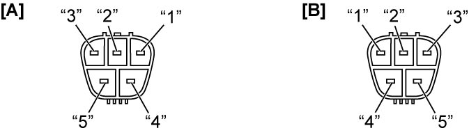
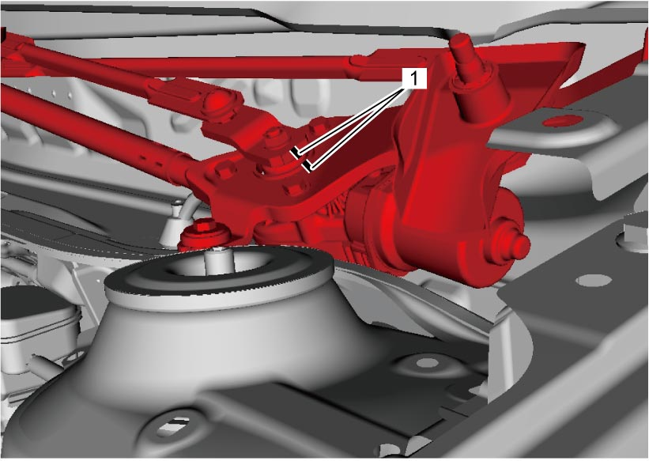
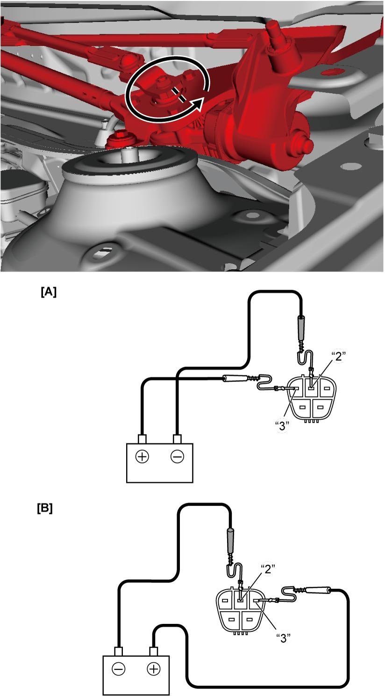
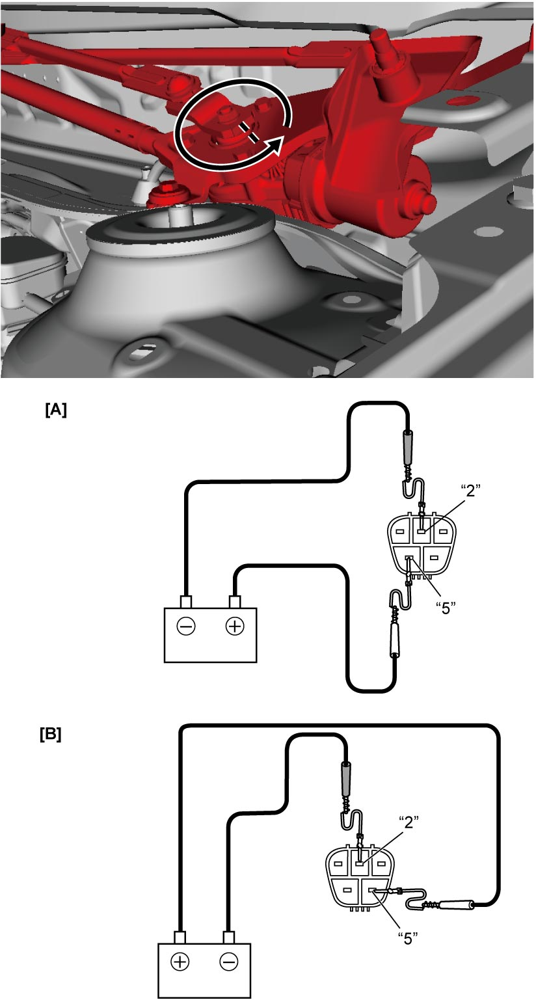
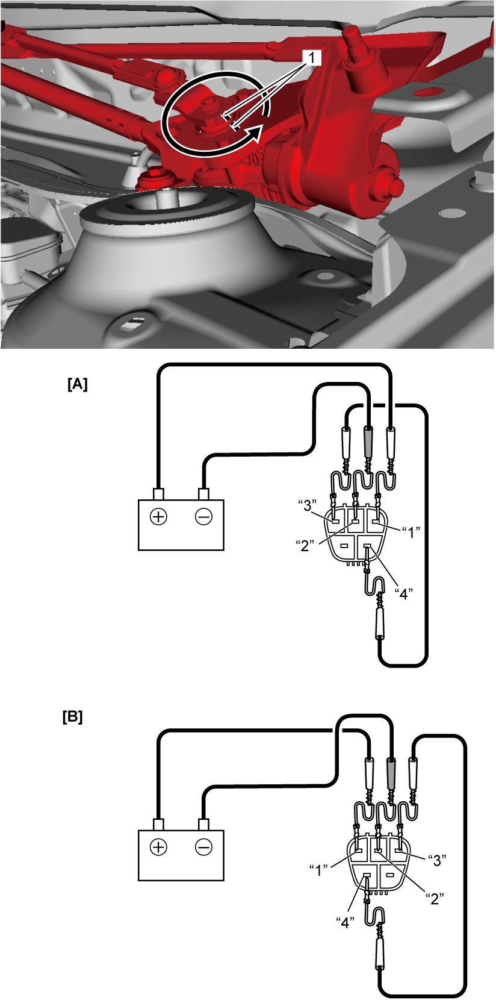

9D
| Windshield Wiper Motor Operation Inspection |
NOTE:

Instructions for wiper motor operation inspection are based on LHD wiper motor. Note the following points when checking motor on RHD.
•Motor on RHD rotates counterclockwise as does wiper motor on LHD.
•Terminal assignment for RHD wiper motor connector is different from that for LHD wiper motor connector as shown in figure. Note this when servicing motor on RHD.
•Terminal assignment for RHD wiper motor connector is different from that for LHD wiper motor connector as shown in figure. Note this when servicing motor on RHD.

 "Expand image")
| [A]: | LHD | [B]: | RHD |
1)Make marks (1) as shown in figure with wiper motor stopped.

 "Expand image")
2)Connect battery positive (+) and negative (–) terminals to wiper motor connector terminals as shown to operate motor at low speed. If wiper motor does not operate, replace wiper motor.

 "Expand image")
| [A]: | LHD | [B]: | RHD |
3)Connect battery positive (+) and negative (–) terminals to wiper motor connector terminals as shown to operate motor at high speed. If wiper motor does not operate, replace wiper motor.

 "Expand image")
| [A]: | LHD | [B]: | RHD |
4)Perform the following steps to check that wiper motor stops at wiper park position.
a)Connect lead from battery positive (+) terminal to terminal “3” of wiper motor connector. Connect lead from battery negative (–) terminal to terminal “2” of wiper motor connector. Wiper motor will start rotating.
b)Disconnect lead from terminal “3” of wiper motor connector to stop wiper motor when marks (1) are not aligned.
c)Connect jumper wire between terminals “3” and “4” of wiper motor connector. Then connect lead from battery positive (+) terminal to terminal “1” of wiper motor connector and connect lead from battery negative (–) terminal to terminal “2” of wiper motor connector. Check that wiper motor starts rotating again and then stops when marks (1) are aligned.

 "Expand image")
| [A]: | LHD | [B]: | RHD |
d)Repeat Step a) – c) several times to check that the motor stops every time when marks are aligned.
If check result is not as specified, replace wiper motor.
If check result is not as specified, replace wiper motor.